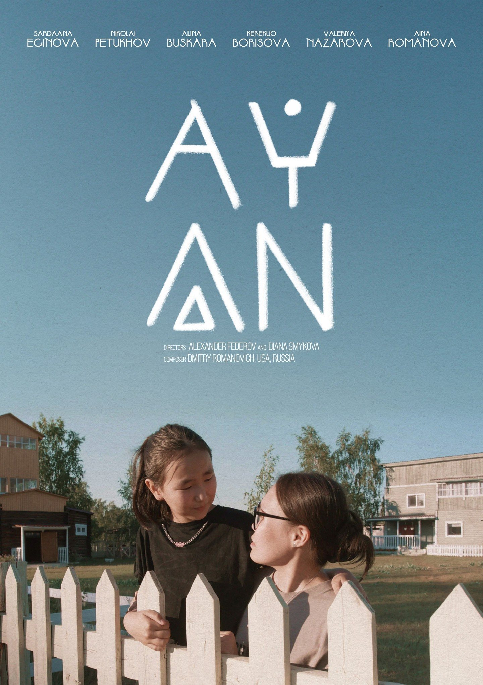
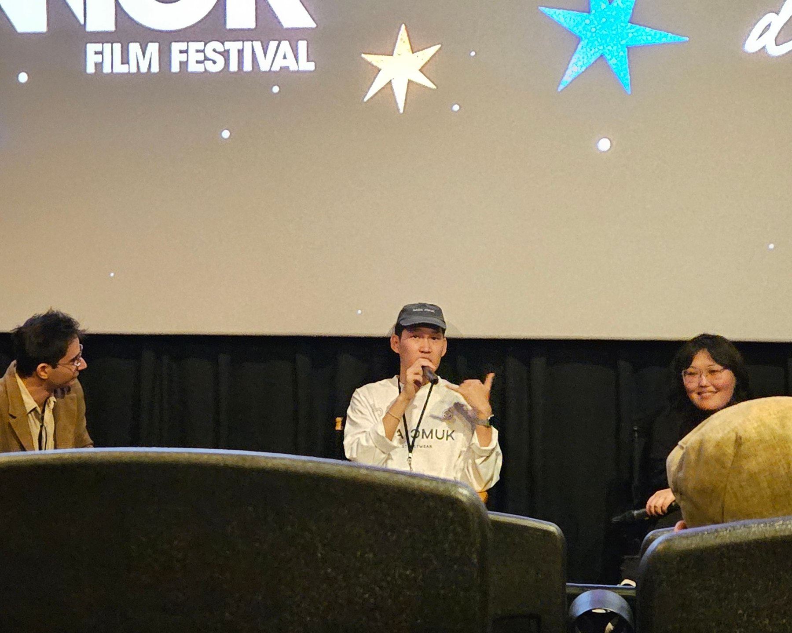
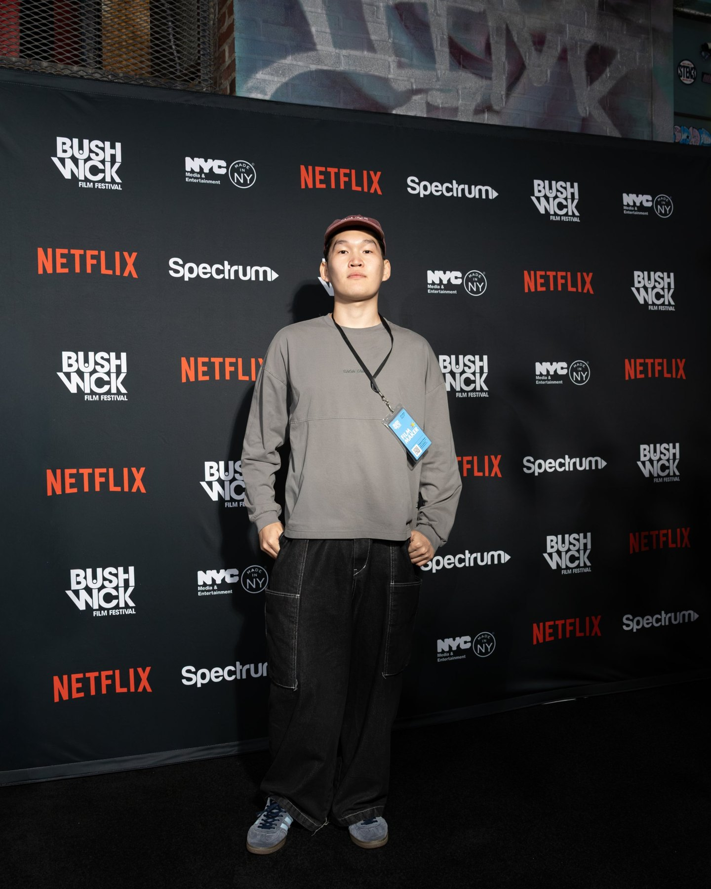

Film 2025
AYAN
Official Selection — Bushwick Film Festival 2026
Overview
Young people from Yakutia, finding home in America.
AYAN is an independent film about identity, belonging and the connection to one’s roots, told through young people from Yakutia building lives in the United States.
I worked behind and in front of the camera: as a cinematographer and as a cast member.
Cinematography
Shot on a vintage Soviet lens.
I shot nature and the people in the film on a Lumix S5II with a vintage Helios 44-2. The lens gives the swirling bokeh and soft flares that make the forest scenes feel like memory.
Festival
Official Selection, Bushwick Film Festival 2026.
In October 2026 AYAN was selected for the Bushwick Film Festival in New York City. I attended as a filmmaker and, after the screening, answered the audience’s questions in the Q&A.

